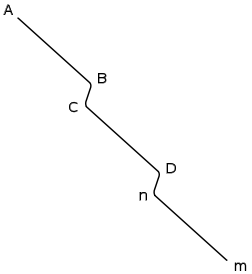

Беседа 673 от 3877 · Беинса Дуно
Пътят на ученика. Основната идея
– Само светлият път на Мъдростта води към Истината
– Тя постоянно ни весели.
Тайна молитва.
Прочете се резюме от темите: „Разлика между философските схващания на Платона и Аристотеля“.
Прочетоха се няколко от работите върху темата „Разлика между страх и съвест“.
За следния път тема № 9: „Ползата от богатството и сиромашията.“
Какъв трябва да бъде пътят на ученика? Всеки път се очертава, отбелязва се по нещо. Ако е физически път, той се очертава от местата, през които минава. Този път може да минава покрай полета, планини, реки или други места. Ако този път е морален или умствен, той се отличава с една ясна, положителна мисъл. Ясните мисли не са безплодни, а всяка безплодна мисъл, според мен. безпокои човека. Например под думата .„размножаване“ съвременните хора разбират едно нещо, а в живата природа тази дума има двояко значение. Ако ударите един съд в земята, той ще се размножи на малки парченца, но това не е размножаване в истинския смисъл на думата, това е раздробяване. Когато хората вървят по този процес, те се израждат. Запример бащата е много умен. Синът слиза с един градус по-долу от бащиния си уровен. Неговият син пък слиза с още един градус по-долу от уровсна на баща си и т.н. Срещат се такива поколения в живота, които постепенно се израждат – вървят в нисходяща степен. Туй не е размножаване, това е раздробяване.
По същия закон на раздробяване, а не по закона на размножаването, вървят у вас някои мисли в развитието си. Много от вас, учениците на окултния клас, след като сте следвали в университета 5 или 10 години, вие чувствате като че ли нищо не знаете. Ако човек от скромност чувства, че неговото знание е нищо пред великото знание в света, това разбирам, то е едно нещо. Но да изгубваш своята памет, да изгубваш своя разсъдък, да изгубваш смисъла на знанието пред великото знание, това е процес на раздробяване, не е процес на съвършенство.

Природата изразява движението на тия линии в две противоположни посоки. Когато вие разсъждавате здраво и се развивате правилно, движението на първата линия не образува пътя AB. но обратния път – BA. Това показва, че щом човек се развива правилно, челото му расте нагоре, тази линия BA се повдига перпендикулярно нагоре. Когато пък се развиват вашите интелектуални способности, или вашият интелект, тогава носът расте. Носът, значи, не расте нагоре, а надолу. Следователно имате линията CD. Челото расте нагоре в дясно, а носът и брадата отиват надолу, в ляво. Тогава имате отношението 1:2. Добре, ако вашият интелект и вашата воля се съединят и противодействат на Божествения принцип във вас, в какво положение ще се намерите? – Ще се раздвоите. И наистина, човек по някой път се раздвоява. Тогава какво трябва да правите? За да спаси човека, природата е разрешила този въпрос. Как? Понеже нисшето в човешкия свят – интелектът в човека, и нисшето в животинския свят, което изразява брадата в човека, се съединили против Божественото, природата ги е разделила, като направила устата – тя разделя носа от брадата. И затова, когато човек стане лош, първото нещо, което трябва да направите, за да го поправите, е да го нахраните. Може да проверите това нещо. Ако имате един неприятел, който ви мрази, гощавайте го, хранете го, той ще ви стане приятел. Значи, устата в природата представлява процес на раздвояване, процес на разделяне на тия две сили, които действат против Божествения принцип. И тъй. когато вашата воля и вашият интелект се съединят, трябва да ги разделите, т.е. да създадете на ума и на волята си такъв обект, който да привлича всичката им енергия.
Сега всичките нещастия в света се раждат от известни желания. Например някой път се заражда желанието да блеснете пред света. То е желание да израстете нависоко, да станете обемист, дебел, да пуснете големи корени и т.н. Туй е в реда на нещата, то е Божествено желание, но за реализирането му във физическия свят действат противоположни сили – нисши сили. Значи, вие искате да станете едно голямо растение или едно голямо дърво, но идват големи бури. Какво ще стане с вас тогава? Ако нямате нужното смирение, ще ви изкоренят и вие ще бъдете или изкъртени, или счупени. Следователно малките тревички в закона на развитието си са в по-голяма безопасност, отколкото големите дървета. При това грамадните дървета в природата изразходват излишна енергия, без тя да се оплодотвори. Ние знаем, че едно хиладогодишно дърво, за да израсте на 10–15–20 метра широчина в диаметър, е погълнало грамадна енергия в себе си. Питам: ако нямаше в света разумни същества, които биха могли да използват тази грамадна енергия, складирана в тия дървета, какво биха правили те с нея? И този въпрос природата е разрешила разумно. Всички тия големи дървета на миналото, които са расли без смирение, природата ги е събрала и Затрупала в дъното на земята, като образувала от тях каменните въглища, които сегашният човек употребява за гориво. Тя е натрупала тия дървета в земята, за да се трансформира отпосле тяхната енергия в топлина и светлина. С тази топлинна и светлинна енергия, която се получава от тия дървета, се подпомага развитието на човешкия ум и човешкото сърце.
Като имате предвид всичко това, вие може да си кажете: как, ние дължим ли тогава на тия дървета, от чиято енергия се ползваме днес? Едно дърво, това е собственост на едно разумно същество. В такъв случай, мислите ли, че ония същества, които са оставили своите кости, своите тела долу в почвата да се ползвате от тях няма един ден да търсят тази своя собственост? Голямото зло в света днес иде именно от каменните въглища Чието от окултно гледище много от тия същества които хиляди години са били свързани със земята, днес при изгарянето на въглищата, било във фабриките в параходите, в треновете и другаде, се освобождават и създават големи злини на света. Защо? Защото някои от тия същества, които са били свързани с дърветата вървят в низходяща степен на развитие. Оттук ще извадя една аналогия, а именно: както растенията представляват един преходен етап към развитието на човека, тъй и човекът представлява един преходен етап към развитието на ангелите. Енергията, която ние събираме в нашите тела от земята, един ден ще бъде полезна за други, по-висши същества. Тя ще бъде основа за културата на един по-висш свят от сегашния. Щe кажете: Какво от това, ще дадем енергията си. Злото седи в това именно, че ако вървите в низходяща степен на своето развитие, вие ще бъдете заплетени в тази материя и няма да може да се освободите. Но ако вървите във възходяща степен на своето развитие, ако вървите към Божественото, вие лесно ще се освободите от тази материя, в която сте заплетени. Като оставите телата си на земята, вие ще бъдете свободни от тях и като влезете в ангелския свят, ще се ползвате от благата, които сте оставили на земята. Та като ученици на Окултната школа вие трябва да имате по-дълбоки разбирания за живота. Аз ви обръщам внимание на това, за да не се роди във вас страх, да се пазите от сянката си. Не, веднъж сте дошли на земята, вие сте свързани с нейните закони и трябва да се развивате по Божествен начин, а не по човешки. Ще вървите и надолу, и нагоре. Човек е дърво, съставено от други две дървета. Тия две дървета съставляват двете главни системи в човека: мозъчната и симпатичната нервна система. Клонете на мозъчната система се разпространяват надолу, чак до крайниците на тялото, а корените му са горе в мозъка. В това отношение човек представлява дърво, насадено в една саксия. Другото представлява стомашния мозък или тъй наречената симпатична нервна система която се състои от ред възли, ганглии, разположени най-много в областта на стомаха. Корените на симпатичната нервна система са насадени в ганглиите, т.е. в стомашния мозък, а клоните ѝ отиват нагоре. Значи клоните на тия две дървета се преплитат. По какво се отличават тия две системи? – По своите резултати. Мозъчната система е носителка на електричество, затова, ако тя се развие повече от другата, човек почва да съхне. Щом човек почне да съхне, това показва, че преодоляващо влияние в организма му има мозъчната система. Електричеството отнема всичката влага от организма, и затова такъв човек е сух, без влага, безводен е той. Симпатичната нервна система се отличава с обратни резултати на мозъчната. Тя е носителка на магнетизма в човека. Когато тя е развита в някой човек, той надебелява, явява се натрупване на излишна материя, която се обръща после в тлъстини.
Следователно, тия две системи могат да се коригират една друга. Когато човек затлъстее много, какво трябва да прави? – Да упражнява ума си. Всички хора, които не мислят, затлъстяват. Такъв човек става един чувствен обект, той само чувства, но не мисли. Задебелееш лr Сега, наблюдавайте как става растенето у вас, как се развиват отделните ви удове. Някой път, запример, носът ви не расте на дължина, но се разширява. Ако расте на дължина, означава, че му се придава известен умствен колорит, но ако се разширява, без да расте на дължина, придава му се повече чувствен характер. Следователно широчината на носа винаги трябва да съответства на дължината му. Правили ли сте измервания в университета да видите, ако един нос е дълъг 6 см, каква широчина му отговаря. (– 35 мм широчина). Да, 35 мм е нормата. За един 20 годишен човек 3 см или 30 мм широчина на носа е малко. Това означава слаба дихателна система, т.е. такъв човек може да има силен интелект, но мисълта му не е дълбока, защото дълбоката мисъл винаги подразбира дълбоко дишане. Това дишане не трябва да става бързо, но медлено. Аз не препоръчвам бързото дишане, но медленото, плавното дишане. И когато си лягате, и когато ставате, ще си внушавате, че дишате медлено.
Носът и челото в човека представляват два отделни свята. Носът е светът на физическия човек. Той е от мъжки пол, но раздвоен. Всички негови пориви са все към земята. Челото е светът на висшия, на горния човек. В него няма раздвояване. Той нито е мъж, нито е жена. Той е човек. Във вас сега може да се появи мисълта: веднъж родени така, как можем да си помогнем? Вие се лъжете, не сте родени така. Вие си предполагате само, че сте родени, никой от вас още не е роден. Вие сте само въплътени в материята, но въплътяването не е раждане. Раждането е един Божествен, един естествен процес на душата. Въплътяването е един неестествен процес. Ако някой каже, че е роден така, то значи, че той може правилно да се развива; щом е въплътен в материята тоя трябва да употреби своя висш, Божествен ум, за да разплете. Как ще се разплете? По какво се отличава въплътяването? Въплътеният в материята човек е крайно капризен, каквото види по улицата за ядене, все му се яде; през дето мине, все ще си купи нещо и ще дъвче; ще напълни джобовете си с орехи, лешници, ябълки и др. подобни. Ако го питаш, защо дъвче постоянно, ще ти отговори: да минава времето по-лесно. Той ще чете всякакви книги безразборно; романи, история, философия, математика, естествени науки и др. – всичко в него е каша. Ако го запиташ какво специално го интересува, било в някой от романите, които чете или в някои от научните книги, ще каже: Чета, колкото да се прекара времето. Какво те интересува във философията на еди-кого си? – Да видя неговите възгледи. Такъв човек обаче няма нещо определено, към което да се стреми. Не, не трябва да бъде така. Чета ли някакъв роман, трябва да зная каква е основната идея в него. Проучвам ли някаква философия, трябва да зная каква е основната идея в тази философия. Следователно човек, който се е родил, трябва да има една основна идея.
Аз желая всеки от вас да има една основна идея. За следния път развийте темата № 10: „Основната мисъл на личния ви живот.“ Вие ще кажете: това е една свещена идея, тя важи лично за нас. Аз бих желал да имате една свещена идея, бих се радвал на това Не казвам, че вие нямате свещени идеи, но може би вие още не сте намерили в себе си тази свещена идея, а желая да я намерите. Тъй както ви гледам, знаете ли на какво ви уподобявам? – Вашето положение мога да сравня с това на България. Например, българите сега имат много дългове и всички финансисти се чудят как да оправят положението на България. В България има скрити много богатства – въглища, скъпоценни камъни, злато и др., но не могат да ги намерят и затова българите си казват: Хайде да направим един заем, да подобрим положението си! За заем всички мислят, но никой не мисли да намери в себе си тази основна идея и да я използва. Тя е богатство, енергия, скрита вътре в човека. Американците се отличават от българите по това, че те имат основна идея. Те казват: ние ще обработим и основно ще използваме богатствата, които се намират в нашата държава. Ако отидете в Америка, никъде няма да срещнете бедна студентка или беден студент, на които богатите американци да дават пари подарък. Ако някой богат американец иска да помогне на един беден студент, ще му каже: „Господине, аз имам предвидена известна работа за тебе. Ако се заемеш да я свършиш, ще ти платя добре. Докато я свършиш, ти си задължен по отношение тази работа. Свършиш ли я, ти си съвършено свободен.“ Отлична черта е тази у американците! Там слугините работят осем часа дневно. След този осемчасов труд тя прекратява работата си, облича се хубаво, взима чадъра си и излиза. Господарката дума не ѝ казва. Вечерта се прибере в своята стая, легне си, свободна е, никой не я безпокои. На другия ден пак започва работата си. Извън работното време тя е свободна да си действа както иска. В България няма такова нещо.
Това, което става между българите, говори за безидеен живот. В тях няма никаква основна идея. Сега вие сте българи, родени сте в България, питам ви: имат ли те някаква литература или някакви исторически паметници, от които да се види каква е тяхната основна идея? Те и до сега са безидейни хора. Не че нямат идеи, много идеи са имали и имат, но основна идея в техния бит не са имали и нямат. Като ви казвам това, аз искам да ви предпазя от атавизъм. Атавистически, гледам, и във вас се заражда същата характерна черта – да разпръсквате енергията си във всички посоки. Ще се пазите от това! Преди всичко трябва да знаете, че сте мислещи същества и затова трябва да имате една основна идея в света. Ще пребродите цялата земя и отдето и да е, ще намерите тази основна идея. Като намерите тази идея, ще я турите на най-свещеното място в себе си, а всички ваши идеи ще поставите в съответно съотношение към нея. И като работите по този начин, значението, което придобивате, ще има полза за вас. И тогава, като растете и се развивате, няма да остарявате, но във вас ще става едно вътрешно разширение.
И тъй, това, което ви казвам, е необходимо за един окултен клас Ако вие не вземете предвид тия мои думи, аз зная какви ще бъдат резултатите на една окултна школа, която няма основна идея. Всички такива школи се разпадат. Не само това, но и вашият живот ще се разпадне. И за в бъдеще, каквато и работа да вършите, ако нямате една основна идея в себе си, животът ви ще се разпадне и вие нищо няма да спечелите. Нашето желание е всички вие да имате успех в живота си.
За да намерите тази своя основна идея, тъй ще разпределите времето си, че ще оставите известни часове през деня, известни часове през нощта, като се пробудите, да отправите една силна струя нагоре: ще мислите за Бога, за Слънцето, за светиите, за всички велики хора на миналото, за всички хора на идеите които и сега живеят. Ще размишлявате през което и да е време от деня по 1–2–5–10 минути, за да се свързвате с тях. Това ще бъде един процес на растене във вас. Тъй ще укрепне и духът ви. Вие трябва да мислите, че всичко може да направите. Можете да направите всичко, но кога. Когато сте във връзка с всички добри хора, които вкупом съставляват едно Божествено тяло и всички си помагат. Значи, всичко може да направите заедно с добрите хора по света, а сам нищо не можете да направите. Ако искате да бъдете силен, ще си кажете: Аз, добрият човек и всички добри хора в света с мене, плюс Бога с мен, Който е над нас, всичко мога да направя. Тъй седи законът. Ако някой каже: Аз мога да направя всичко – това е една трета от Истината. Ако кажете: Аз и всички добри хора можем да направим всичко – това са две трети от Истината. И ако най-после кажете: Аз, включая всички добри хора и Бог, можем да направим всичко – това са три трети от Истината. Това е главната идея. Като казвам всички добри хора, подразбирам изобщо всички добри хора, които живеят по цялото земно кълбо – било като живи или заминали за другия свят – всички съставляват едно цяло с Бога. Когато работим с тази основна идея, те са готови да ни помагат всякога и във всичко: и в науката, и в изкуствата, и в живота. Ако имате едно изкуство в себе си, художник сте например, и имате тази основна идея, те ще ви помагат и вие ще бъдете отличен художник. Ако сте музикант или писател, или философ и имате тази основна идея в себе си, те ще ви помагат, ще вдъхнат във вас нова култура, нови идеи и вие ще се проявите като отличен музикант, писател или философ. Може да сте търговец или какъв и да е в света, имате ли тази основна идея в себе си, всички ще ви помагат и този малък кръг на дейност, в който се проявявате, ще бъде за вас благословение.
И тъй, първото нещо, което искам от вас, е да се самоопределите в себе си. Аз казвам: пътят на ученика е едно строго самоопределение. Определите ли се веднъж в себе си, няма да се изказвате навън, но ще бъдете твърд като диамант; всички външни условия ще се смекчат постепенно и вие ще си пробиете път и сега, и за в бъдеще. Нашето желание не е да се определите само за 5–10–15 години и след това да се разкапе у вас всеки стремеж, но сегашното ви самоопределение да бъде за в бъдеще един велик етап от вашите минали стремежи.
При сегашния развой на човечеството, в пътя си вие ще срещнете една малка мъчнотия. Аз я наричам малка мъчнотия, понеже е кармическа. Затова, за да можете да пренесете тази мъчнотия, всеки от вас трябва да бъде силен, да има един морален гръбнак, за да не попадне в слабост и да не се подхлъзне, да не се върне назад. Знаете ли в какво седи подхлъзването на ученика? В непослушанието. Не подразбирам послушание на онова, което аз казвам, но послушание на онова великото, Божественото, което говори в нас – когато ние не се подчиняваме на ония велики основни закони, върху които почива животът на нашето съзнание. Всеки от вас се приготовлява да стане гражданин на Царството Божие, за което трябва да има правилни отношения към Бога, към своята душа и към ближния си. Вие не можете да установите тия правилни отношения, докато нямате една основна идея в себе си. Ако нямате такава основна идея, вие ще мязате на ония картоиграчи, които всяка вечер се събират да играят на скамбил, на домино и все се побеждават. „Аз – казва, го победих.“ Все се побеждават, и победени остават – губят си времето.
Аз ви навеждам на тази велика мисъл, понеже и вие скоро ще играете на карти – на домино, на скамбил и др. Редактирането на един вестник или на едно списание, например, аз наричам игра на домино. Защо? Да редактираш един вестник значи да започнеш да мислиш какво да готвиш на тия хора. Ще почнеш да се нагаждаш към тях. Ще мислиш какво да им наготвиш днес, утре, другиден и т.н., дано задоволиш вкуса им. Като ви казвам това, не трябва да ми се сърдите, аз не обичам илюзиите. Вие трябва да знаете нещата тъй, както са в действителност. Някъде ледът е тънък, а мястото дълбоко и аз ти казвам: не ходи по този лед! Той е тънък, ще се счупи и ти ще потънеш във водата. Някой казва: аз ще напиша една статия, но нека да видя какви са нашите хора, какви са техните изисквания и т.н. И започва той да приготовлява нещо по вкуса им. Дойде, обаче, някой от провинцията, който чел тази статия и казва: Не ми се харесва тази статия. И започвате вие да се нагаждате по вкуса на вашите читатели и по вкуса на съвременните изисквания на обществото, но на какво ще замяза списанието ви? Друг път вие казвате: Ние още първия път ще напишем нещо силно, ще прокараме Истината. Добре, направете опит и вижте колко абонати ще имате и в единия, и в другия случай. Американците, които са толкова практични, и досега търсят начин как да издават едно независимо списание. И всеки ден те се приготовляват за такова списание, но разгледайте американските списания – всичко ще намерите в тях, но не и дълбока мисъл. Ако се прокара в техните списания или вестници някоя трезва мисъл, тя ще бъде дадена или от някой индиец, или от някой изпаднал славянин, който търси начин за прехранване, но самите американци не могат да дадат нещо дълбоко. Те се занимават с повърхностна мисъл и считат, че не може да се роди втори Марк Твен, мислят го гениален. Да, гениален е да осмее всичко, и то тъй майсторски, че ти като го четеш, сам се смееш на себе си. Да осмиваш нещата и да мислиш, че по този обратен път ще можеш да морализираш хората, това не е възпитание, това не е Божествен метод на въздействие. Засега в света съществуват два метода, два пътя, чрез които се въздейства на хората – единият е чрез осмиване, другият – чрез нагаждане към техните вкусове, но и двата са временни. Истинският метод се отличава от тях. Действително, ще пишете това, което, хората са годни да разбират, но у всички ви трябва да има една основна идея. Да кажем, че ще пишете за реформите в обществото. Вие постарали ли сте се в себе си да направите една реформа? Ще кажете: Ние, младите, ще съберем пари помежду си, и списанието ще почне да излиза. Мислите ли, че парите ще оправят работата? Списание с пари не се издава – туй трябва да го знаете! В списанието трябва да се вложи живот, трябва да се вложи една Божествена идея. Да издаваш списание, това е сериозна работа! Не е въпросът в множеството на абонатите. Ако вие, младите, искате да издавате едно списание, то трябва да бъде строго идейно, и между вас трябва да има единство и обединение в идеята. Почнете ли да се разделяте да политиканствате, мен там ме няма. Аз обичам идейните работи и за тях съм готов да помагам, но дойде ли въпрос до личните работи – от тях не се интересувам.
Аз желая всички вие да бъдете идейни. Само онези от вас, които са проникнати от една Божествена идея, ще останат като работници на това дело. Аз не ви правя упрек, но ви предупреждавам. Сега носът и волята ви се съединили, правят заговор против Божественото във вас. Следователно, ако се заемете да издавате едно списание и един ден се скарате, питам ви: каква полза ще имате от това списание? Казвате: Ще придобия една опитност. Ако веднъж се напия и след това ме набият, трябва ли втори път пак да се напивам? Достатъчно е веднъж да ме набият. Защо трябва и втори път да се напивам? Защо трябва и втори път да ме бият? Ако въпросът е да придобия такава опитност, ще отида в една кръчма, там все ще се намерят пияни, ще видя как бият някого и ще си кажа: лошо е пиянството придобих тази опитност. Аз ви казвам тия неща, защото не искам да се обезсърчавате, предпазвам ви от обезсърчението.
И тъй във всяка ваша постъпка трябва да вложите нещо идейно, за да я осмислите. В света има две основни идеи, два метода, по които могат да растат и да се развиват нещата. Единият метод е чисто човешки, другият – Божествен. Вие започвате една работа, която е и човешка, и Божествена. Тогава 25 на сто от успеха ѝ е от вас, 50 на сто от Бога и 25 на сто от живата природа или както аз я наричам „окръжаващите ви хора“. Следователно тези три фактора трябва да действат всякога в съгласие помежду си, за да може каква и да е идея да успее. Затова вие трябва да устремите всички ваши сили към една цел – да развивате Божественото в себе си и да му дадете предимство над човешкото. Аз бих желал като се срещнем, всеки да види в другия една основна Божествена идея, различна от неговата. Красиво е, когато хората, които вървят в един и същ път, се различават в своите прояви! Един изучава, например, външната страна на някоя наука, на някой въпрос, друг – вътрешната, но няма разногласие между тях. Един изучава живата философия, друг математиката, трети музиката, четвърти изкуствата, пети болезнените състояния на човешкия организъм и т.н., но виждаш всички тия хора са в съгласие и хармония помежду си, всички са положителни хора, всички са хора с една основна Божествена идея. Всички трябва да се стремите към положителното. Малко да е, но чисто! При това бих желал да развиете друго едно качество в себе си, което липсва в българите, а всички вие сте българи. Един от големите недъзи на българите е, че те нямат почитание един към друг. Туй липсва и у вас. От изследванията, които съм направил, съм заключил, че религиозното чувство у българина е слабо развито. Благородното чувство в човека е резултат само на религиозното чувство. Понеже в българина има този недостатък на непочитание на другите, той може атавистически да се прояви и във вас. Един българин, като отиде в кръчмата и се напие, може да изнесе и най-интимните работи, които са му казани като на приятел. Някои казват: Какво от това, че изказал тия работи? Аз забелязвам, че същото това нещо става и между вас. Има някои работи, които не трябва да се изнасят. Аз няма да ви кажа защо, но казвам, че това е в ущърб на самите вас. Ако вие изнесете някои от интимните работи на някой ваш приятел, вие сами ще се спънете в живота си. Ако великият закон в света беше такъв, да изнасяме всичко, защо природата не е изнесла всичко, защо го държи закрито?
По същия закон, има много свещени работи, които ние трябва да пазим. Докато ги пазим, има благородство в нас; изнесем ли ги, ние сами се унижаваме, ние сами се компрометираме. Човек, който изнася свещените неща, аз казвам, че този човек проституира. Има известни свещени работи, до които като дойде да говорите, кажете: Приятелю, по този въпрос няма да говорим, дотук ще спрем. Например, аз говоря за човека, говоря за неговите погрешки по отношение неговия ум, неговото сърце и неговата воля, но дойде ли до човешката душа, аз казвам: за душата не говоря. В мене има едно качество: когато говоря за човешката душа, аз говоря само за доброто в нея. Туй, което зная, то е, че Божествената душа няма абсолютно нищо лошо. И когато човек живее душевен живот, т.е. когато душата му взема участие във всички негови мисли, чувства и действия, такъв човек аз наричам „новороден човек“. В Божественото у човека няма абсолютно нищо лошо, но когато се отнася до човека, въплътен в материята, то е друг въпрос. И когато някой път аз правя бележки, те се отнасят до вашето въплътяване в материята, такива са вашите отношения, но когато се говори за вашата душа, въпросът седи другояче. Затова, вие трябва да имате две мнения за себе си. Човек едновременно е нещо човешко и нещо Божествено. Това е правото положение на нещата, затова ще гледате всички да развивате Божественото в себе си. Във всинца ви Божественото не е укрепнало. У някои То е много слабо, като малко детенце. И ако вие не се заемете с вашия разум да пазите Божественото от животинското, от нисшето в себе си, то ще се осакати и при сегашното си развитие вие ще се спънете, ще се върнете назад най-малко 1000 години от живота си.
Аз ви говоря като на окултни ученици. Ако не бяхте такива, опасността за вас щеше да бъде по-малка, понеже детето, като знае де седят сладките неща като знае, че има скрити някои работи, отива да ги бърка Като не знае, не бърка и по-малко опасности има за него. Вие сте научили много работи, за които ще ви държат отговорни. Знанието всякога прави човека отговорен. Щом ви се разкрие една, каква и да е малка тайна, тази тайна веднага увеличава вашата отговорност и вие сте свързани, вплетени с нея. Ще кажете: Защо е това свързване? Забележете едно нещо: целокупният човек расте нагоре. То е хубавото носът и брадата растат надолу. Като разгледате хиромантически линиите на ръката си, какво забелязвате, как расте линията на сърцето? – Наляво. Накъде отива линията на ума? – Надясно. Накъде отива линията на живота? – Надолу. Значи, имаме пак същия закон: линията на живота отива наляво, линията на сърцето – наляво, а линията на ума – надясно. Тогава накъде отива линията на съдбата? – Надясно, нагоре. Оттук, носът и брадата растат надолу, сърцето и животът – наляво, а движението на Божествения ум върви надясно. Отношението или пропорцията между тия величини е 1:2, затова не трябва само да мечтаете върху Божественото, но и да се спирате върху него, да работите за развиването му.
Вие ще ме питате: В какво седи Божественото? Ето в какво се проявява Божественото. Когато имате един приятел, старайте се да откриете една добра черта в него. Мнозина от вас се оплакват, че няма кои да ги обича. Аз ще ви препоръчам едно правило, какво трябва да правите, за да ви обичат. Всички може да използвате това правило, то е следното. Имаш един приятел които искаш да те обича. Намери в него една от най-добрите му черти, дръж я постоянно в ума си и той ще те обикне. Щом го критикуваш в душата си, той не може да те обича. Между него и тебе винаги ще има една междина. И тъй, за да ви обича някой, законът е следният: ще намерите едно хубаво качество в този човек и ще го държите в ума си. Ако постъпвате така, няма да се намери човек в света, който да не ви обича. Този човек, като те срещне, ще каже: има един човек в света, който държи в ума си една хубава идея заради мен. Вън от това правило, вън от този закон не могат да съществуват правилни отношения между хората. Казвате: трябва да познаваме човешкия характер! Приложете това правило и ще познаете човека. Приложете това правило за два месеца помежду си или един за друг само. Срещнете някого, когото не обичате. Постарайте се да намерите една добра черта в неговия характер и да го обикнете. Направете този опит за два месеца! Отделяйте всеки ден – сутрин 5 минути, на обед 5 м. и вечер 5 м. – за размишление върху добрите черти на вашите приятели. Ще постъпвате при този опит по следния начин: като станете сутрин, най-първо ще се спрете върху себе си, да видите, имате ли една хубава черта, едно отличително качество, по което да се различавате от другите, и ще задържите туй качество в ума си. За това качество ще се обикнете и ще го отправите и към другите. Като направите този опит с вас, вие се свързвате с невидимия свят. На обед ще правите този опит с вашия приятел, пак 5 м. Вечер ще правите опита с вашия ближен. Като правите опитите си, ще гледате, може ли въз основа на туй хубаво качество във всеки едного да се съгради нещо ценно. Може. От опита ви през тия два месеца ще видим каква обща идея може да се извади. През тия два месеца и аз ще отделям по 15 минути на ден, да намеря по едно добро качество във вас. Не ми е оставало досега такова свободно време, но сега ще отделя малко от времето си, ще го посветя само за това, да намеря доброто във вас. И след два месеца (до 9.ІІ.1924 г.) ще формулираме това ново правило. Ще направим този опит, да видим може ли това правило да работи между българите. Ако работи, добре; ако не работи, ще направим втори, трети опит, докато най-после това правило проработи.
Вие сте млади, силни и желанието ми е да не хабите напразно силите, които имате сега. Аз искам всички ваши сили – и на ума, и на сърцето, и на волята, да се използват за добро. Аз искам вашият бъдещ живот да бъде съграден не на гранит, а на една диамантена воля, която да не се разклаща от никакъв вятър, от никакви бури и да имате една основна идея в себе си, да вървите в Божествения път без никакво спиране. Туй е, което трябва да стане с всеки едного от вас.
Аз ви говоря приятелски, защото искам да се развивате, да напреднете в живота си. По-възрастните ваши братя и сестри очакват да излезе нещо от вас. Те очакват от вас нещо, което в тях няма. Имат право да очакват. Но вие трябва да знаете, че за постигане на възвишеното, на Божественото, на благородното в човека се изискват усилия. Вие трябва да правите тия усилия. Ето, наскоро дохожда тук Марто, отличен виолонист. Той проявява такава техника, такова знание! Но всичко това е постигнато с усилие, с труд и постоянство. Днес един наш приятел – художник, изложи картините си, в които личи знание, разбиране на краските. Но през какви мъчнотии, през какви борби е минал той! И всички видни писатели, всички реформатори, в каквото и да е направление на живота, са минали все през борби. В това отношение всички вие може да се ползвате от техните опитности. Аз искам животът ви да бъде красив, най-първо да сте доволни от себе си. Има едно вътрешно, морално, Божествено доволство в човека и аз желая всички да имате не външни похвали, а това дълбоко вътрешно доволство в себе си. Когато човек има това доволство, той е силен и мощен, не отпада духом. Това доволство аз наричам „вътрешна връзка“, която съществува между всички възвишени същества. Сега тази връзка не е скъсана, разхлабена е, но аз желая тя да се уякчи. Например, някоя кост във вашето тяло се изкълчи Се навън и после се намести. Веднъж излязла тази кост навън, тя е придобила вече навика често да излиза. И наистина, виждате – при най-малката мъчнотия в живота тя излиза навън. Някой път и във вас има такива навици, които се проявяват атавистически. Не е лесно да се намести една изкълчена кост в човека! Много ще вика човек, много ще плаче. Същото нещо е и по отношение на вашите мисли и чувства. Докато се наместят те, много ще плаче човек. Кога ще ги наместваме, няма да ви казваме, но ще усетите такива болки, които едва ще издържите. Дойдете ли до най-силната болка, всичко ще се намести. Всяка болка в света има свой максимум на проявление. Дойдете ли до крайния предел на болестта, тя или ще премине, или ще изгубите съзнание. По-добре е болката да се прекрати, отколкото да изгубите съзнанието си. Въпросът не е да се премахнат мъчнотиите, а да се разрешат. Няма отлагане вече. Всички окултни школи, всички окултни ученици съзнават, че всички мъчнотии са дошли до крайния си предел и трябва да се ликвидира с тях. До 1925 година вие трябва да ликвидирате със сметките си – нищо повече. Имате на разположение още две години. Не ликвидирате ли със старото… аз ще замълча. Не че е страшно, но казвам, че когато човек се спира в своя път, дохожда до онази точка на замръзване, дето всяка умствена, всяка духовна деятелност престава. И тогава човек започва да живее един посредствен живот, а човекът не е в посредствения живот. В тия две години вие ще се стегнете, усилено ще работите, няма какво да се плашите. Геройство се иска от вас! На вас, младите, казвам: по-добри времена от тия за вашия растеж не са наставали, затова ще гледате да ги използвате – ще развивате Божественото.
И тъй, ще се насърчавате! Ще отправяте едни към други добри мисли, добри чувства и желания. Ще дойдат и обратните процеси на ума, на волята – ще се разгневите, ще се съмнявате – всичко това, обаче, са външни промени, не са някакви дълбоки, вътрешни бели. Това не засяга вашия живот. Ще гледате същността на нещата. Ще бъдете като онзи плувец, който пори водата с греблата си и върви напред. Вие може да срещнете по-малки или по-големи вълни, но като гребете непрекъснато с греблата си, ще достигнете брега. Ако оставите греблата си и кажете: Какво ще стане с нас, дали ще излезем благополучно на брега и т.н. – вълните могат да извият лодката ви и да ви потопят във водата. Не, вие ще държите само греблата си! Вие трябва да излезете на другия бряг! Другият бряг, това е новата култура.
И аз ви казвам: вашите гребла, вашите лопати са здрави, трябва ви само работа и то постоянна работа.
Тайна молитва.
Само светлият път на Мъдростта води към Истината.
Тя постоянно ни весели.
8 лекция на Младежкия окултен клас, държана от Учителя на 2.XII.1923 г. в гр. София